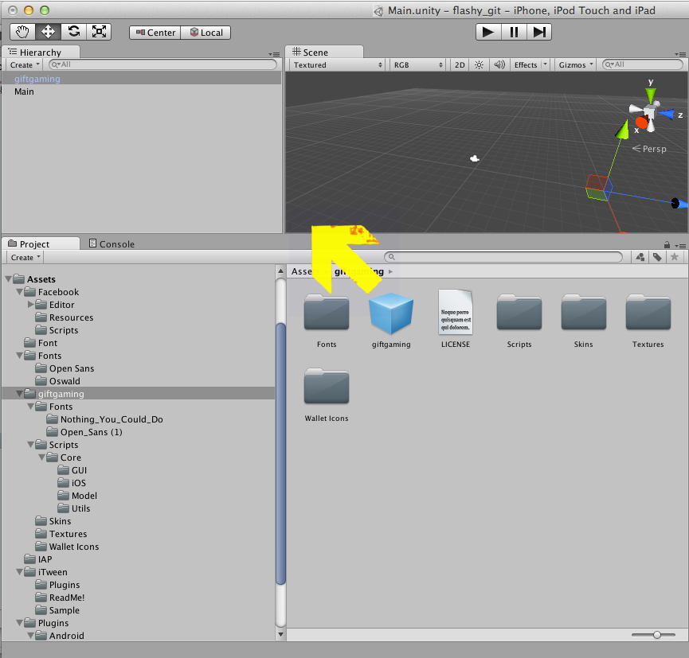
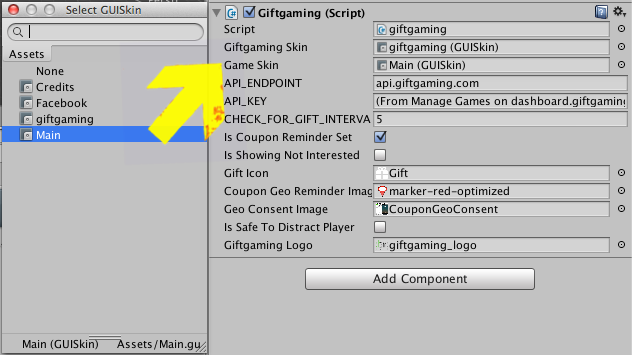
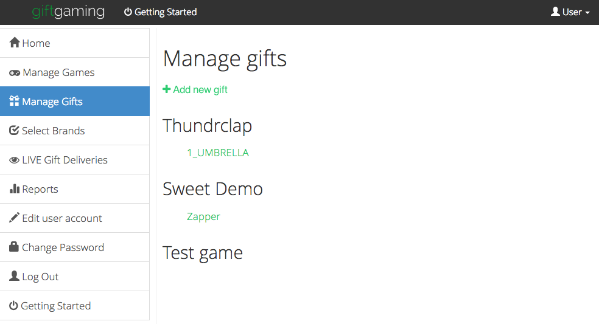
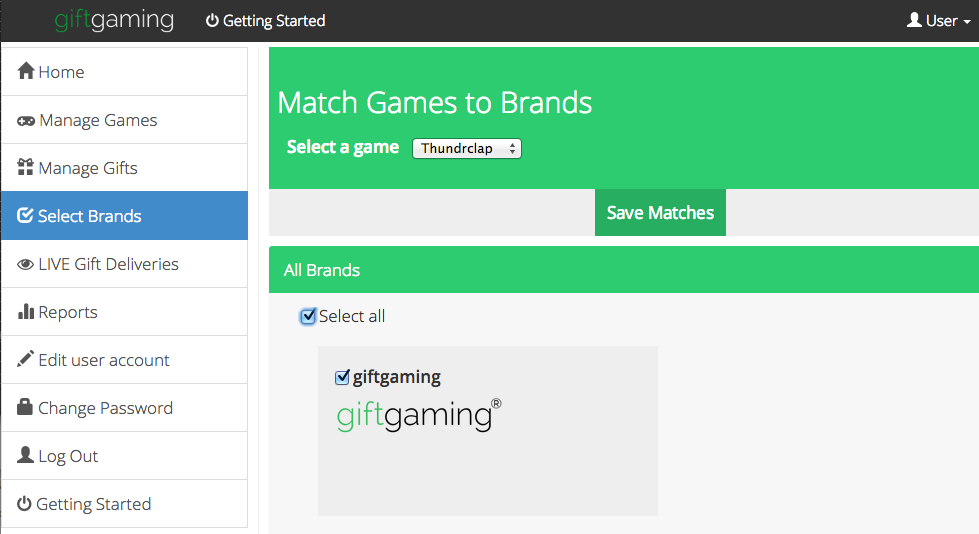
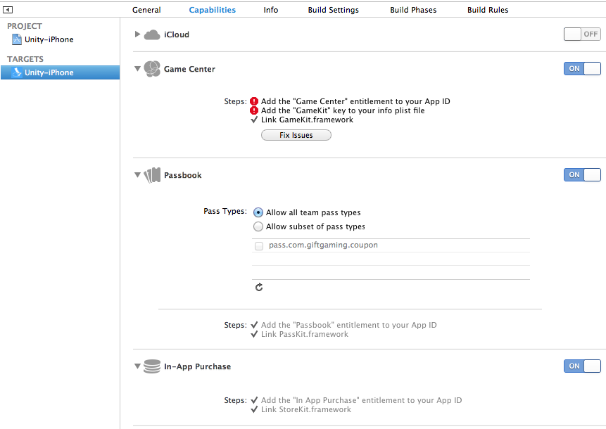

If you've ever used the iOS in-app purchase system and iTunes Connect (TM), you're in luck as our system works similar to that. Each gift has a code - this is sent from our server to your game to tell it what digital content to unlock. What action you take based on the code is entirely up to you. Perhaps you want to give some extra lives, or virtual currency, etc.
The API is stateless and is HTTP-based. The giftgaming Unity SDK caches ad images, and does requests and downloads asynchronously.
Install the giftgaming Unity SDK then drag and drop the giftgaming prefab into the first scene of your game. This will persist throughout the life of the game.
giftgaming tries to not be too intrusive and go for the "native experience". We want to help you preserve the look and feel of your game.
On the giftgaming prefab, set Game Skin to be whatever GUI Skin your game uses generally.
Go to the giftgaming Dashboard and login. Go to Manage Games, add a new game. Afterwards, take the API Key given and put this into the API key field on the giftgaming prefab.
On the giftgaming Dashboard, go to Manage Gifts and create some gifts. Like you would in iTunes Connect (TM).
Open giftgamingGifts.cs in Unity and in the openNextGift() function, decide what to do with the gift code. For example, if you got a code of EXTRA_LIFE, then you'd want to do lives++, etc. You could write a switch-case, or even better, just reuse your existing in-app purchase manager code!
Example of delegating to an existing IAP manager:
public static void openNextGift() {
giftgaming.use.nextGift();
giftgaming.use.openGift();
// Implement your own custom actions here for gift codes
Flashy.use.unlockIAP(giftgaming.use.currentGift.giftCode);
// Use the umbrella icon for all gifts (or whatever)
giftgaming.use.setInGameGiftLogo(Flashy.use.umbrellaIcon);
}
Set an in-game gift logo
Note the setInGameGiftLogo function - ideally you might want to use this function in your IAP manager code, or switch case statement. This tells the giftgaming module what icon to use when a gift is opened. For example, if it was an extra life, perhaps this icon would be of a first-aid kit.
giftgaming uses a "marriage" system. Brands pick games, and game publishers pick brands. We do this to prevent inappropriate advertising on both sides.
Go to Select Brands on the giftgaming Dashboard, then for each of your games, select the brands you think would be appropriate.
The brand must also select your game too for there to be a match. Please make sure you're right about the demographic and age rating! Both the advertiser and you, the game publisher, have a responsibility to reduce any possibility of inappropriate advertising.
If in doubt, refer to Google Play or Apple App Store content and age rating guidelines.
Now you should be able to see gifts coming in your game! To aid debugging, use the LIVE Gift Deliveries interface on the giftgaming Dashboard.
OK so Passbook is pretty damn awesome. It allows players to save coupons in-game quickly as well as provide non-intrusive location-based reminders. When you build for iPhone, please do enable Passbook Capability.
giftgaming allows players to store coupons in your game. This not only makes it convenient to save coupons, it hopefully keeps them coming back to your game!
All you have to do is stick this line of code in your game menu:
giftgaming.use.reviewCouponsButton();
This creates a button which says "giftgaming Coupons"
Then stick this snippet into your menu OnGUI loop:
GUI.skin = giftgaming.use.giftgamingSkin; GUI.enabled = true; giftgaming.use.drawSavedCoupons(); GUI.skin = skin;
When the user clicks the "giftgaming Coupons" button, this will show a list of coupons they can use, and so forth.
Go to the giftgaming Dashboard and view your earning reports. Let the money flow! Please see our full terms and conditions regarding payments.
Feel free to modify this so it looks and feels as part of your game.
Whichever is more visible. Please do not use any other logos, or modify our logo! Thanks.
We'd prefer if you didn't!
Specify how many seconds you want to check between each pull. Note: We went for a pull architecture rather than push for now as we felt it would allow for more control over HTTP request handling. However, we may opt for push in the near future.
Use giftgaming.use.isSafeToDistractPlayer = false; if you want to disable the gift icon appearing during for example, surgeon-level precision tasks, etc.